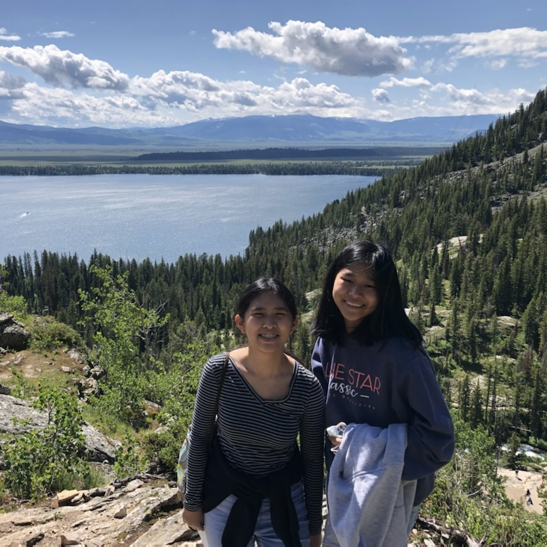

About Me
Hello! My name is Kaylee, and I am a third-year student at The University of Texas at Austin. Although I was originally a journalism and communication honors student, I am currently pursuing a Bachelor of Science in Computer Science, which I will complete in Spring 2024. Within computer science, I am most interested in data science and ML/AI, cloud engineering, and software engineering. Outside of computer science, my interests lie in video games and esports, music, cooking and baking, and hiking.
To tell you a little bit more about what I'm up to outside of school and work, here's what I'm currently working on:
- Creating a neural network that predicts house prices in my hometown of Austin, Texas
- Learning 한국어
- Studying for my AWS Cloud Practioner exam so I can begin working toward my Solutions Architect certification
I am currently seeking internship opportunities for Summer 2023 in any of my areas of interest, but I am willing to explore other fields as well.